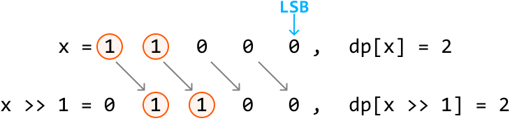
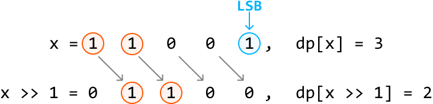

Hamming Weights of Integers
MediumThe Hamming weight of a number is the number of set bits (1-bits) in its binary representation. Given a positive integer n, return an array where the ith element is the Hamming weight of integer i for all integers from 0 to n.
Example:
Input: n = 7
Output: [0, 1, 1, 2, 1, 2, 2, 3]
Explanation:
| Number | Binary representation | Number of set bits |
| 0 | 0 | 0 |
| 1 | 1 | 1 |
| 2 | 10 | 1 |
| 3 | 11 | 2 |
| 4 | 100 | 1 |
| 5 | 101 | 2 |
| 6 | 110 | 2 |
| 7 | 111 | 3 |
Intuition - Count Bits For Each Number
The most straightforward strategy is to individually count the number of bits for each number from 0 to n.
Consider a number x = 25 and its binary representation:
![Image represents a mathematical equation showing the conversion of a base-10 number to its base-2 (binary) equivalent. The top line displays 'x = 25 (base 10)', indicating that the variable 'x' holds the decimal value 25. Below this, an equals sign connects the base-10 representation to its binary equivalent. The binary representation '1 1 0 0 1 (base 2)' is shown as a sequence of five digits (1, 1, 0, 0, and 1), each representing a bit, explicitly labeled as being in base 2. The arrangement clearly shows the direct equivalence between the decimal number 25 and its binary counterpart, 11001. The parentheses around 'base 10' and 'base 2' clarify the number systems used.](images/18_01_hamming-weights-of-integers-img-14f8b2a1.svg)
To count the number of set bits (1s) in a number, we can check each bit and increase a count whenever we find a set bit. Let’s see how this works.
For starters, we can determine the least significant bit (LSB) of x by performing x & 1, which masks all bits of x except the LSB: if x & 1 == 1, the LSB is 1. Otherwise, it’s 0. We can see this below for x = 25:
![Image represents a binary bitwise AND operation. Two five-bit binary numbers are shown, one labeled (x) with the values 11001 and the other labeled (1) with the values 00001. These numbers are arranged vertically, with the (x) number above the (1) number. An ampersand (&) symbol precedes the second binary number, indicating the AND operation. A horizontal line separates the input numbers from the result. The result of the bitwise AND operation is displayed below the line, showing the resulting binary number 00001, also labeled (1), which is obtained by performing a logical AND operation between corresponding bits of the two input numbers. Each bit in the result is 1 only if both corresponding bits in the input numbers are 1; otherwise, it's 0. The grayed-out (1) in the result emphasizes that it's identical to the second input number in this specific example.](images/18_01_hamming-weights-of-integers-img-8833739f.svg)
Now, how do we check the next bit? If we perform a bitwise right-shift operation on x, we shift all bits of x one position to the right. This effectively makes this next bit the new LSB:
![Image represents a visual depiction of a binary operation, possibly a bitwise shift or a similar operation on binary data. The top row shows a sequence of binary digits: 1, 1, 0, a peach-colored box containing '0', and another '1'. These digits are connected via grey arrows to the bottom row, which shows the result of the operation: 0, 1, 1, 0, and another peach-colored box containing '0'. Each digit in the top row is individually connected to a digit in the bottom row; the first '1' connects to '0', the second '1' connects to '1', the '0' connects to '1', and the peach-colored '0' connects to '0'. The final '1' in the top row is not connected to the bottom row. The peach-colored boxes in both rows are labeled 'new LSB' in orange text, indicating that these '0's represent a new least significant bit (LSB) in the operation. The double right arrow ('>>') suggests a right bit shift, where the digits are shifted to the right, and the LSB is added. The '=' symbol indicates that the bottom row is the result of the operation performed on the top row.](images/18_01_hamming-weights-of-integers-img-d25dbdec.svg)
We now have a process we can repeat to count the number of set bits in a number:
- If
x & 1 == 1, increment our count. Otherwise, don’t. - Right shift
x.
Continue with the two steps above until x equals 0, indicating there are no more set bits to count. Doing this for every number from 0 to n provides the answer.
[Interactive code editor — visit bytebytego.com to run]
Implementation - Count Bits For Each Number
from typing import List
def hamming_weights_of_integers(n: int) -> List[int]:
return [count_set_bits(x) for x in range(n + 1)]
def count_set_bits(x: int) -> int:
count = 0
# Count each set bit of 'x' until 'x' equals 0.
while x > 0:
# Increment the count if the LSB is 1.
count += x & 1
# Right shift 'x' to shift the next bit to the LSB position.
x >>= 1
return count
export function hamming_weights_of_integers(n) {
const result = []
for (let i = 0; i <= n; i++) {
result.push(countSetBits(i))
}
return result
}
function countSetBits(x) {
let count = 0
// Count each set bit of 'x' until 'x' equals 0.
while (x > 0) {
count += x & 1
// Right shift 'x' to shift the next bit to the LSB position.
x >>= 1
}
return count
}
import java.util.ArrayList;
public class Main {
public ArrayList hamming_weights_of_integers(int n) {
ArrayList result = new ArrayList<>();
for (int x = 0; x <= n; x++) {
result.add(count_set_bits(x));
}
return result;
}
public int count_set_bits(int x) {
int count = 0;
// Count each set bit of 'x' until 'x' equals 0.
while (x > 0) {
// Increment the count if the LSB is 1.
count += x & 1;
// Right shift 'x' to shift the next bit to the LSB position.
x >>= 1;
}
return count;
}
}
Complexity Analysis
Time complexity: The time complexity of hamming_weights_of_integers is O(nlog(n)) because for each integer x from 0 to n, counting the number of set bits takes logarithmic time, as there are approximately log2(x) bits in that number. If we assume all integers have 32 bits, the time complexity simplifies to just O(n), since counting the set bits for a number will take at most 32 steps, which we do for n+1 numbers.
Space complexity: The space complexity is O(1) because no extra space is used except the space occupied by the output.
Intuition - Dynamic Programming
In the previous approach, it's important to note that by the time we reach integer x, we have already computed the result for all integers from 0 to x - 1. If we find a way to leverage these previous results, we can improve the efficiency of constructing the output array.
It would be wise to find a way to take advantage of some optimal substructure by treating the results from integers 0 to x - 1 as potential subproblems of x. This is the beginning of a DP solution. Let dp[x] represent the number of set bits in integer x.
A predictable way to access a subproblem of dp[x] is to right-shift x by 1, effectively removing its LSB. This is the subproblem dp[x >> 1], and the only difference between this and dp[x] is the LSB which was just removed.
As mentioned earlier, the LSB of x can be found using x & 1. Therefore:
-
If the LSB of
xis 0, there is no difference in the number of bits betweenxandx >> 1:
> 1`). The encircled '1's in the top row shift one position to the right, resulting in the encircled '1's in the bottom row. The remaining bits are filled with '0's. To the right, `dp[x] = 2` indicates the initial count of '1's in `x`, and `dp[x >> 1] = 2` shows the count of '1's after the right shift. The diagram visually demonstrates how the right shift operation moves bits to the right, filling empty positions with zeros, and how this affects the count of '1's."/> -
If the LSB of
xis 1, the difference in the number of bits betweenxandx >> 1is 1:
> 1`), resulting in a new binary number `011`. These shifted bits are also enclosed in orange circles. The text `x = 1 1 0` labels the original binary number, while `x >> 1 = 0 1 1` labels the result of the right bit shift. The expressions `dp[x] = 3` and `dp[x >> 1] = 2` suggest that `dp` is an array or function that counts the number of '1's in the binary representation of `x` and `x >> 1`, respectively. The values 3 and 2 reflect the number of '1's in the original and shifted binary numbers. The zeros in the diagram represent bits with a value of zero."/>
Therefore, we can obtain dp[x] by using the result of dp[x >> 1] and adding the LSB to it:
dp[x] = dp[x >> 1] + (x & 1)
Now, we just need to know what our base case is.
Base case
The simplest version of this problem is when n is 0. In this case, there are no set bits, so the number of set bits is 0. We can apply this base case by setting dp[0] to 0.
After the base case is set, we populate the rest of the DP array by applying our formula from dp[1] to dp[n]. The answer to the problem is then just the values in the DP array, containing the number of set bits for each number from 0 to n.
[Interactive code editor — visit bytebytego.com to run]
Implementation - Dynamic Programming
from typing import List
def hamming_weights_of_integers_dp(n: int) -> List[int]:
# Base case: the number of set bits in 0 is just 0. We set dp[0] to 0 by
# initializing the entire DP array to 0.
dp = [0] * (n + 1)
for x in range(1, n + 1):
# 'dp[x]' is obtained using the result of 'dp[x >> 1]', plus the LSB of 'x'.
dp[x] = dp[x >> 1] + (x & 1)
return dp
export function hamming_weights_of_integers_dp(n) {
// Base case: the number of set bits in 0 is just 0. We set dp[0] to 0 by
// initializing the entire DP array to 0.
const dp = new Array(n + 1).fill(0)
for (let x = 1; x <= n; x++) {
// 'dp[x]' is obtained using the result of 'dp[x >> 1]', plus the LSB of 'x'.
dp[x] = dp[x >> 1] + (x & 1)
}
return dp
}
import java.util.ArrayList;
public class Main {
public ArrayList hamming_weights_of_integers(int n) {
// Base case: the number of set bits in 0 is just 0. We set dp[0] to 0 by
// initializing the entire DP array to 0.
int[] dp = new int[n + 1];
for (int x = 1; x <= n; x++) {
// 'dp[x]' is obtained using the result of 'dp[x >> 1]', plus the LSB of 'x'.
dp[x] = dp[x >> 1] + (x & 1);
}
ArrayList result = new ArrayList<>();
for (int count : dp) {
result.add(count);
}
return result;
}
}
Complexity Analysis
Time complexity: The time complexity of hamming_weights_of_integers_dp is O(n) since we populate each element of the DP array once.
Space complexity: The space complexity is O(1) because no extra space is used, aside from the space taken up by the output, which is the DP array in this case.